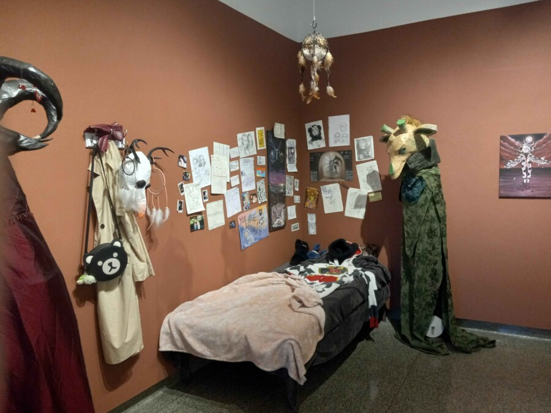

THE DEATH OF A CEIMLINT
Reception and Artist Talk: May 5, 4:30 p.m. in Carlson Tower Galleries
Stephanie Walkowiak is an artist born and raised in Chicago, majoring in art education K-12 at North Park University. Through field experience at Concordia University and North Park University, she has had the opportunity to work alongside diverse and exceptional learners from the pre-K to 7th grade. Her work has been showcased at the Woman Made Gallery in Chicago, as well as displays at Purdue University Fort Wayne in northeast Indiana.
She explores a wide array of mediums from acrylic painting, writing, and illustrating customized origami storybooks, charcoal portraits, to sculptural construction and wearable masks using affordable and often overlooked materials like cardboard, paper, and papier-mâché techniques. Walkowiak has an interest in the macabre and bringing her creations to life; in hopes of creating large-scale sculptures, puppets, and costumes to put on display or use within theatres within the Chicagoland area. By exploring the dark parts of the human psyche through her artwork and storytelling, Walkowiak hopes to illuminate the struggles of mental health, mania, depression, psychosis, bipolarity, and what it’s like to be an eccentric artist in the 21st century.
The Carlson Tower Galleries are free and open to the public Monday–Friday from 9:00 a.m. – 9:00 p.m.
For any further questions about the event, reach out to either smat@northpark.edu or 773-244-5630.
EXHIBITION STATEMENT:
The year is 9703. Overseer MAU Scritter Mamaus has been missing for over two months, and everything under her jurisdiction is falling apart over in the nitty gritty galaxy. Overseers VAU Velvester Veroci and SAU Salumia Nettuinia, concerned that Scritter’s severe mania has reared its ugly head once more, have time-travelled all the wya back to Earth in 2026 where they believe she may be hiding. They discover Scritter’s ceimlint, dead in the hall. They find her bedroom, scattered with her work, potions spilled over, almost as if she left in a frenzy… but why?